Flugkarte & Himmelsradar · iPhone, iPad & Apple Watch
Entdecke, was über oder unter dir ist.
Am Fensterplatz benennt AirReveal die Berge, Städte und Küsten unter dir, auch im Flugmodus. Am Boden zeigt es jedes Flugzeug über dir, wohin es fliegt, und Polizei- und Rettungshubschrauber in ihren eigenen Farben.
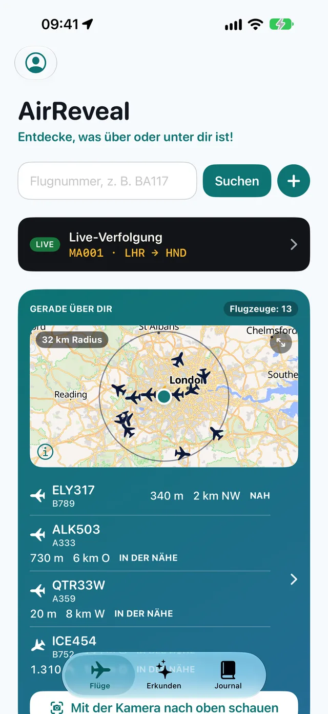
Abflüge
| Flug | Funktion | Gate | Status |
|---|---|---|---|
| AR200 | Über dir · jedes Flugzeug am Himmel | A1 | Boarding |
| AR201 | Jedem Flugzeug auf der Karte folgen | A2 | Planmäßig |
| AR202 | Einsatzflugzeuge in ihren Farben | B1 | Neu |
| AR203 | Apple Watch & Zifferblätter | B2 | Planmäßig |
| AR204 | Live-Aktivität & Widgets | C1 | Planmäßig |
| AR205 | Spotter-Logbuch & Himmelsbingo | C2 | Boarding |
| AR206 | Fallblatt- & Anzeigetafel-Stil | D1 | Planmäßig |
Folge mir · dein Flug
Verfolge deinen Flug per GPS, auch im Flugmodus, und AirReveal benennt die Berge, Städte und Küsten unter dir, während du sie überfliegst.
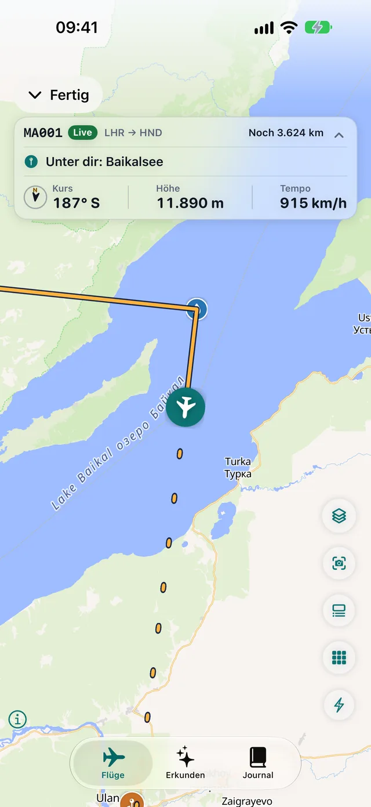
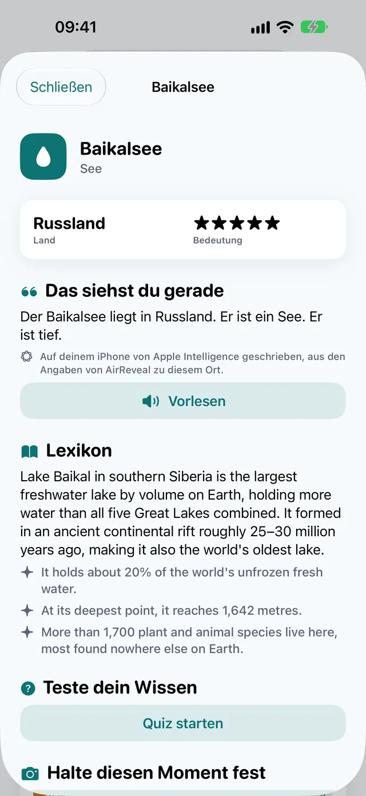
Begleiter für den Fensterplatz
An jedem Fensterplatz stellt sich dieselbe Frage. AirReveal beantwortet sie in 38.000 Fuß nur mit dem GPS deines iPhone: Lade Karten und Sehenswürdigkeiten deines Flugs vor dem Einsteigen, und du bist bereit.
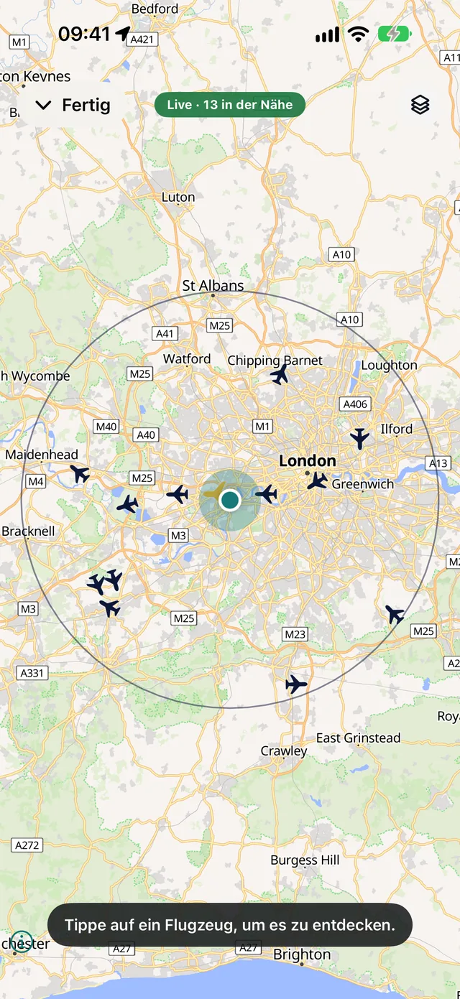
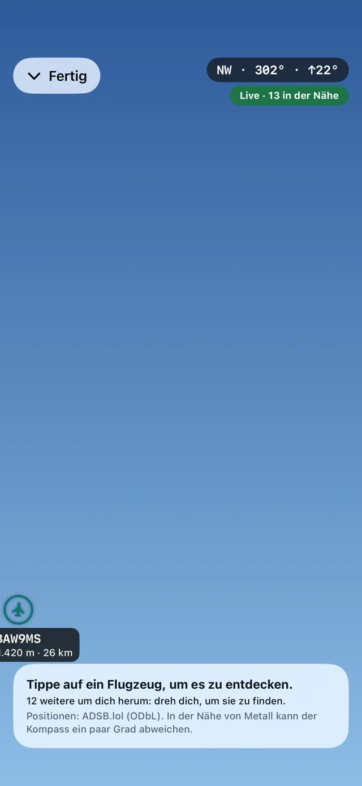
Ich folge dir · der Himmel um dich
Jedes Flugzeug um dich herum auf einem Radar und einer Live-Karte, aus freien Community-Flugdaten. Tippe eines an, um es zu enthüllen.
Neu in 2.0
Polizei, Luftrettung, Küstenwache, Brandbekämpfung und Militär heben sich in den Farben ihres Dienstes ab. Schalte Hinweise ein, und AirReveal sagt dir Bescheid, wenn eines in die Nähe kommt, auch bei geschlossener App.
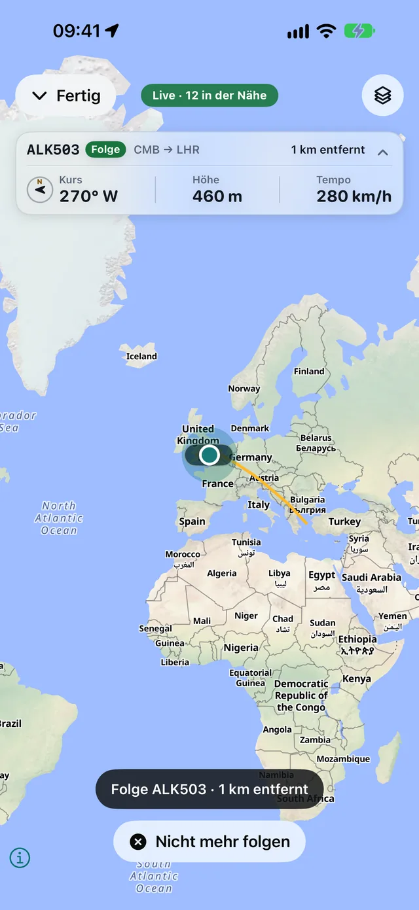
Über die App hinaus
Spiel mit – oder nicht
Spiele für beide Seiten, auf deinen eigenen Flügen und mit den Flugzeugen über dir. Nichts für dich? Schalte sie in den Einstellungen aus, und AirReveal ist ein schlichter Flugtracker.
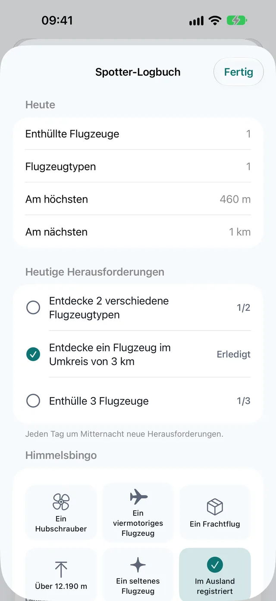
Jedes Flugzeug, das du enthüllst, als häufig, selten oder legendär eingestuft, mit deinen Bestwerten.
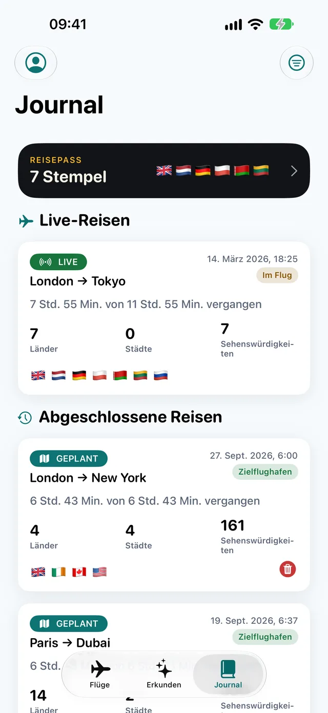
Entdeckungs-Bingo auf deinem Flug, Himmelsbingo von zu Hause und drei kleine Herausforderungen am Tag.
Stempel deinen Reisepass, sammle Sehenswürdigkeiten und entdecke jeden Einsatzdienst für ein Abzeichen.
Ganz nach deinem Geschmack
Die klappernden Abflugtafeln: Bernstein auf Schwarz.
Ein moderner Flughafenbildschirm: Weiß und Gold auf tiefem Marineblau.
Karten in deinem Farbthema, hell oder dunkel.
Für jeden Fensterplatz gemacht
Höhe, Geschwindigkeit und Kurs, Flugzeugtypen und ein Logbuch jedes Flugzeugs, das du entdeckst.
Eine ruhige Karte für dieselbe Route jede Woche, mit jedes Mal etwas Neuem zu entdecken.
Welche Seite die beste ist, was unten liegt, und Bingo, damit alle aus dem Fenster schauen.
Wissenswertes über jede Sehenswürdigkeit und jeden Flugzeugtyp, von zu Hause oder aus 38.000 Fuß.
Rundgang
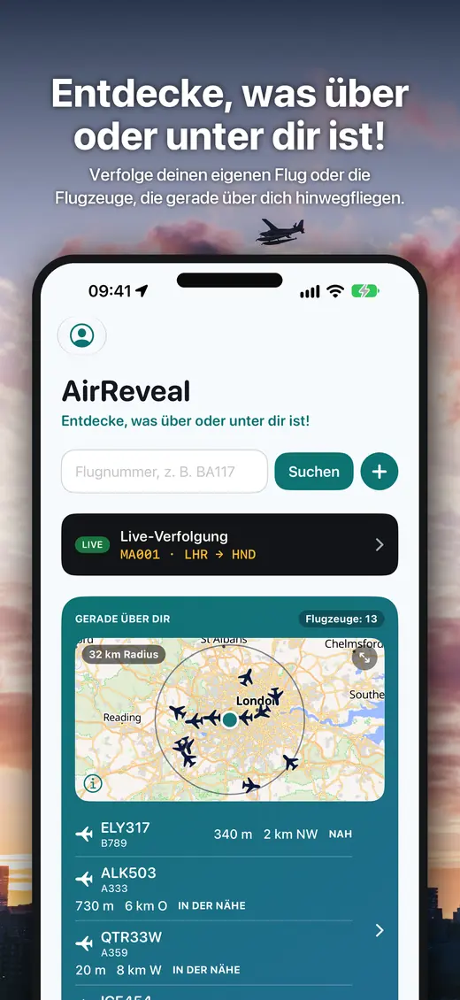
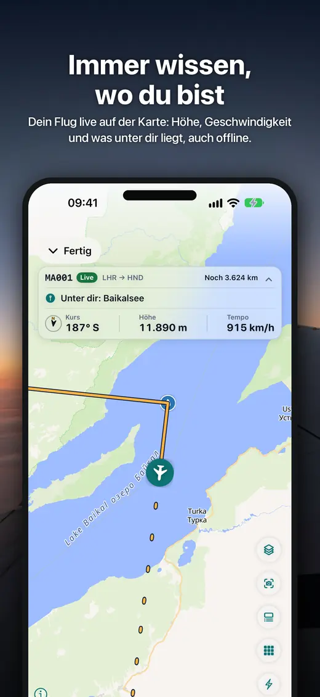
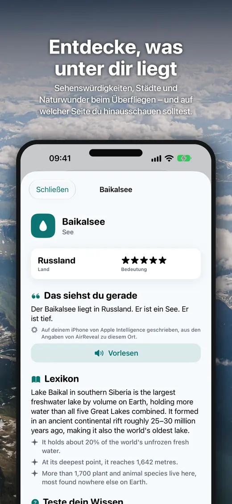
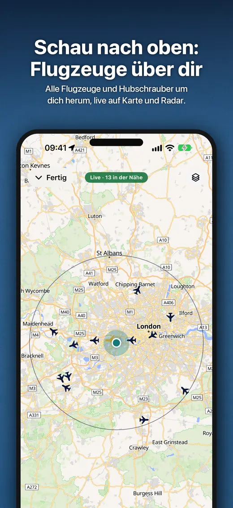
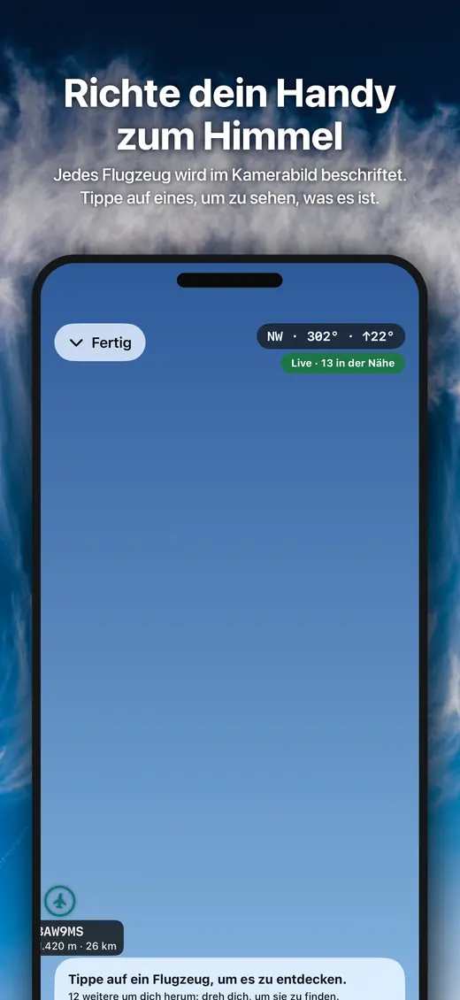
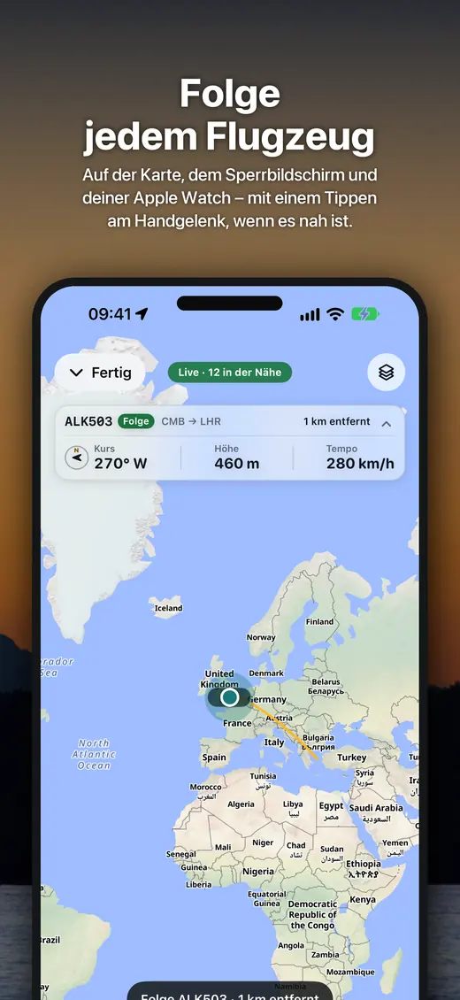
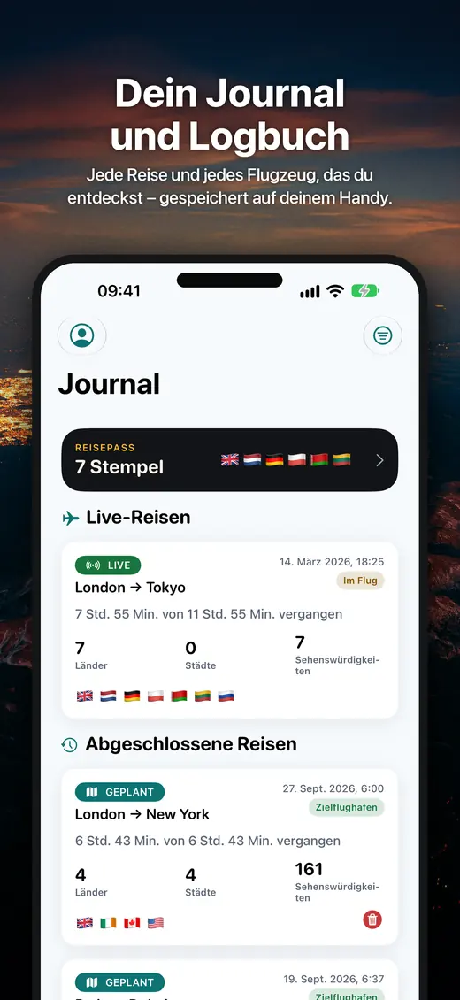
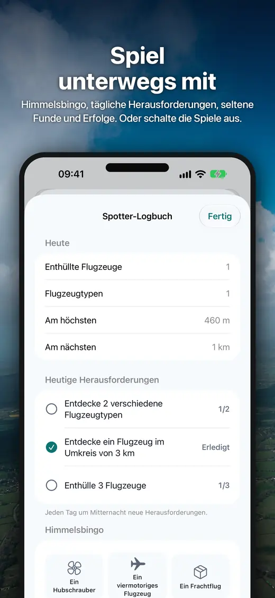
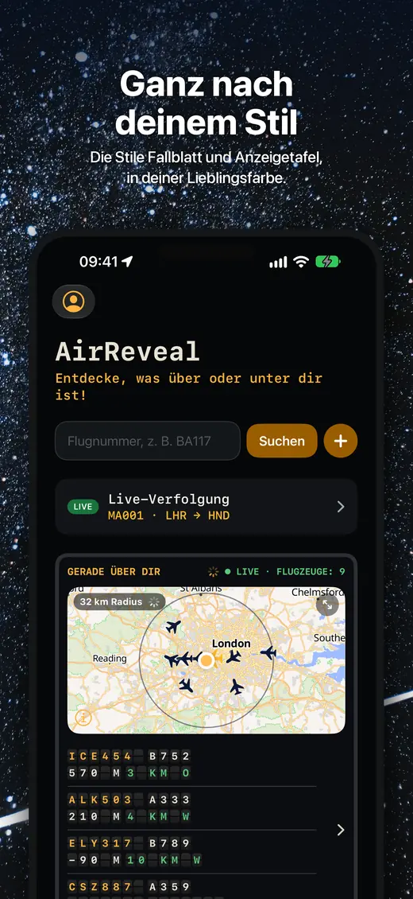
Wähle, wie du fliegst
Plane und sieh Flüge in der Vorschau an und erkunde das Erlebnis vor dem Abflug.
Schalte die fortlaufende Live-GPS-Verfolgung und das volle Erlebnis an Bord frei.
Die Preise werden im App Store in deiner Währung angezeigt.
Fragen
Öffne AirReveal: Die App bestimmt mit dem GPS deines Geräts deine Position auf der Karte und benennt die Sehenswürdigkeiten, Städte, Küsten und Naturwunder unter und vor deinem Flugzeug – in Echtzeit.
„Gerade über dir“ zeigt jedes Flugzeug um dich herum auf einem Radar und einer Live-Karte, aus freien Community-Flugdaten. Tippe eines an, um seine Route, seinen Typ, seine Höhe und ein Foto genau dieses Flugzeugs zu sehen.
Ja. Polizei, Luftrettung, Küstenwache, Brandbekämpfung und Militär werden in ihren eigenen Farben gezeigt, und du kannst Hinweise für die Dienste einschalten, die du auswählst, innerhalb einer Entfernung, die du festlegst. Hinweise sind aus, bis du sie einschaltest.
Ja. Die Live-Verfolgung nutzt das GPS deines Geräts, das weder WLAN an Bord noch Mobilfunk braucht. Lade die Offline-Inhalte eines Flugs vor dem Abflug herunter, damit Karten und Sehenswürdigkeiten für die Reise bereitstehen.
AirReveal sagt dir, ob eine Sehenswürdigkeit oder die Sonne zur Goldenen Stunde links oder rechts von deinem Flugzeug liegt, damit du weißt, aus welchem Fenster du schauen musst.
Nein. AirReveal ist ein persönlicher Begleiter für die Reise selbst. Es ist kein offizieller Flugstatus-, Flugverkehrs- oder Flugsicherheitsdienst – informiere dich bei deiner Airline und am Flughafen über Gates, Verspätungen und Anweisungen der Crew.
Du kannst Flüge kostenlos planen und in der Vorschau ansehen und deinen ersten Flug live verfolgen. AirReveal Pro schaltet die fortlaufende Live-GPS-Verfolgung und das volle Erlebnis an Bord frei.
Letzter Aufruf
AirReveal gibt es im App Store für iPhone, iPad und Apple Watch. Kostenlos starten.